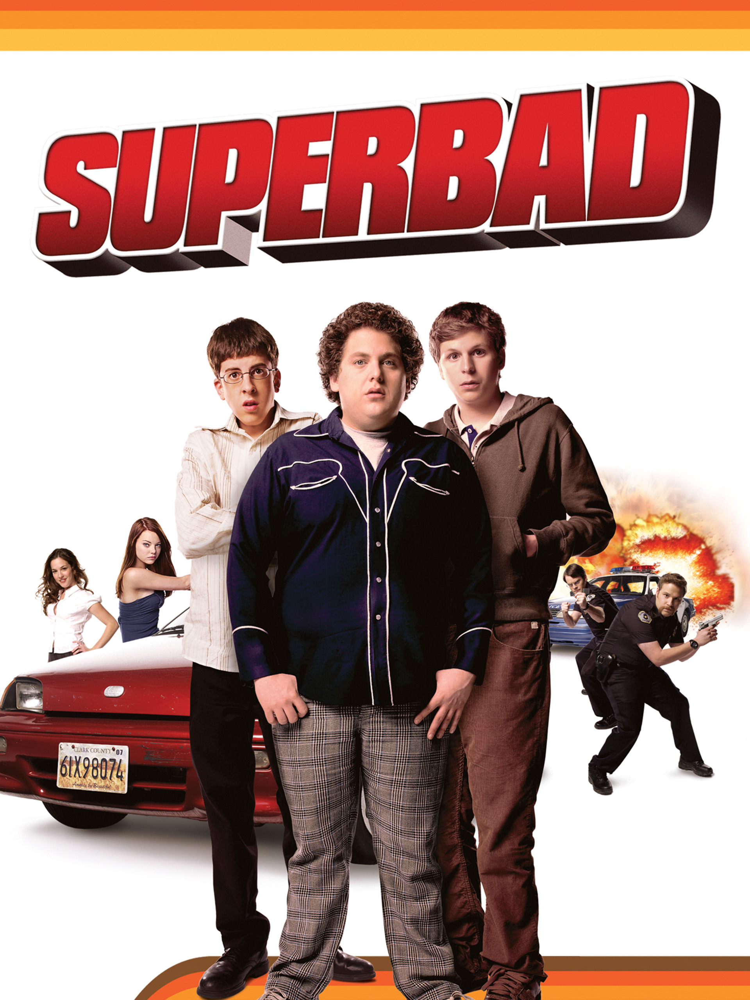

SuperBad
Diretor: Greg Mottola
Com: Jonah Hill, Michael Cera, Seth Rogen, Bill Hader e Cristopher Mintz-Plasse
Censura:16 anos
Tempo de duração: 113 min
Sinopse: Superbad conta a história de Evan (Michael Cera) e Seth (Jonah Hill), dois amigos de infância que estão prestes a se separar para estudarem na faculdade. Tudo gira em torno de um plano: os dois, junto com Foggel (Christopher Mintz-Plasse) e sua falsa carteira de identidade, pretendem comprar ilegalmente bebidas alcoólicas para uma festa, com o intuito de impressionar Jules (Emma Stone) e Becca (Martha MacIsaac), amores platônicos de Seth e Evan, respectivamente. No caminho, se encontram com todo o tipo de confusões, incluindo a eventual amizade entre Foggel e os policiais Michaels (Seth Rogen) e Slater (Bill Hader).